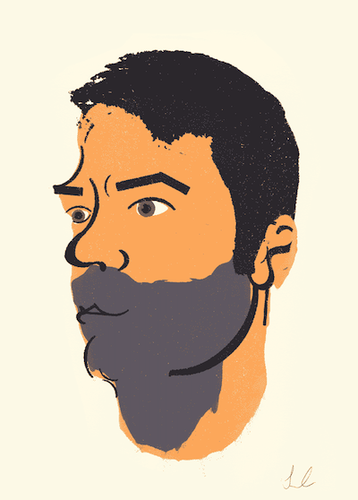

About
Hello, my name is Keith Duke.
I’m a full-stack engineer building modern web and AI/agent systems, with 13+ years of experience shipping production software at scale.
For a decade I was as a engineer at CBS Interactive/Paramount as both a Lead and Senior on brands such as Metacritic and TV.com, serving millions of daily visitors. Since 2022 I've focused independently on AI and agentic systems. What is possible in the frontier, building T.O.M., a local-first agentic framework, and Dunil's Hold, a roguelike game that pairs deterministic logic with on-device LLM narration. I have worked with most delivery technologies, such as...
-
JavaScript/TypeScript with Node and Vue/Nuxt, React/Next, Vite and Astro.
-
Python with Django, FastAPI and Flask.
-
PHP with Laravel, CodeIgniter and Zend.
-
CSS with Sass, BEM and major frameworks like Bootstrap and Tailwind.
I completed my Bachelor of Arts in Web Design & New Media at the Academy of Art University in San Francisco. I previously completed coursework in Computer Science at Middle Tennessee State University. I have a background and love for craft and restoration, having worked professionally in wood and glass restoration. I fancy myself a writer, coding is an act of writing to two audiences.
Read more of my writing at Here Lately.
Projects:
AI & Agent Systems: TOM agent framework.
A local-first agentic framework running Qwen models entirely on-device via Apple's MLX, nothing leaves the host machine. Written in Python. This is one of my earlier designs, there are useful pieces in it if you are looking for specifics on working with MLX. I'm currently building v5 in private: a fifth rearchitecture with fewer third-party dependencies and a multi-agent design — Qwen 3.5-4B as the primary reasoning agent, with Apple's on-device Foundation Models API running as a verifier sub-agent. It's my ongoing test of how far a small, fully local model stack can go at real coding tasks.
Web/Game Development: Dunil's Hold.
An hybrid text-based roguelike for iOS. A deterministic, Swift-native game engine handles all combat and world state; a local LLM (Liquid AI LFM2, via MLX) supplies atmospheric narration on top. The model never invents game state, it only describes what already happened. Fully offline, zero data collection.